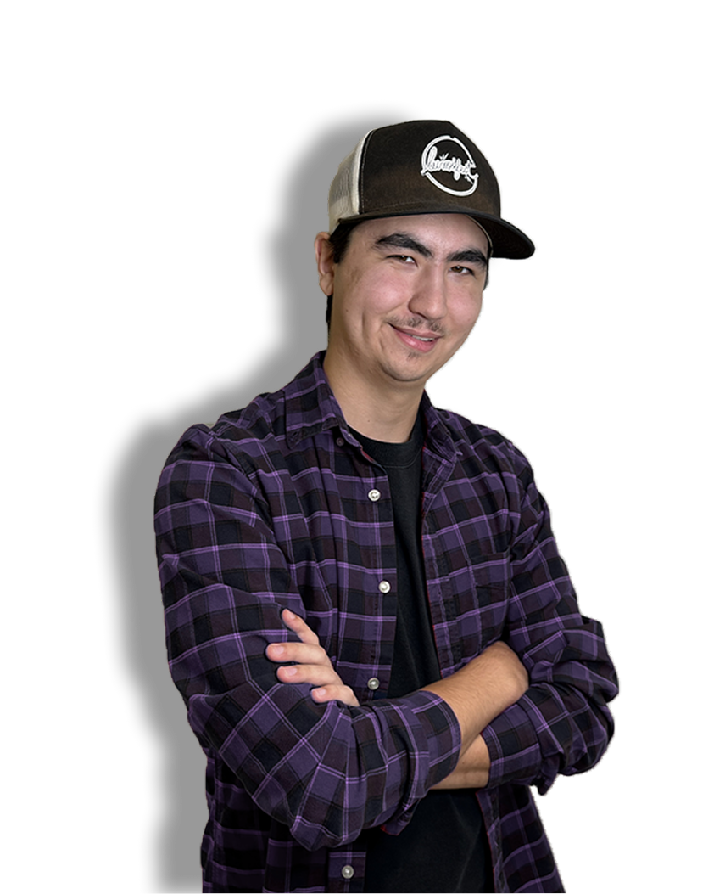

Félix Lapointe
Intégration/Développement web
Je suis un apprenti éternel du html, css et js qui produit et intègre des maquettes de site web.


Dans mes projets Web, j’aime adapter les sites à différentes thématiques et créer des maquettes. J’apprécie aussi intégrer différents médias , comme la vidéo et la musique , pour rendre un site plus vivant et intéressant.
Après plusieurs changements de programme pour connaître mes options , je suis rentré en technique d’intégration en multimédia où j’ai trouvé ma place.
Pokemon
Cartes à collectionner
Jeux vidéos
Trames sonores
Organisation
Écoute active
Esprit d'équipe
Empathique